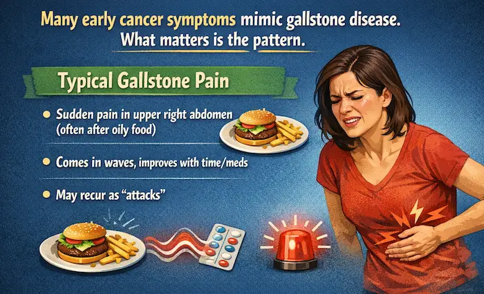
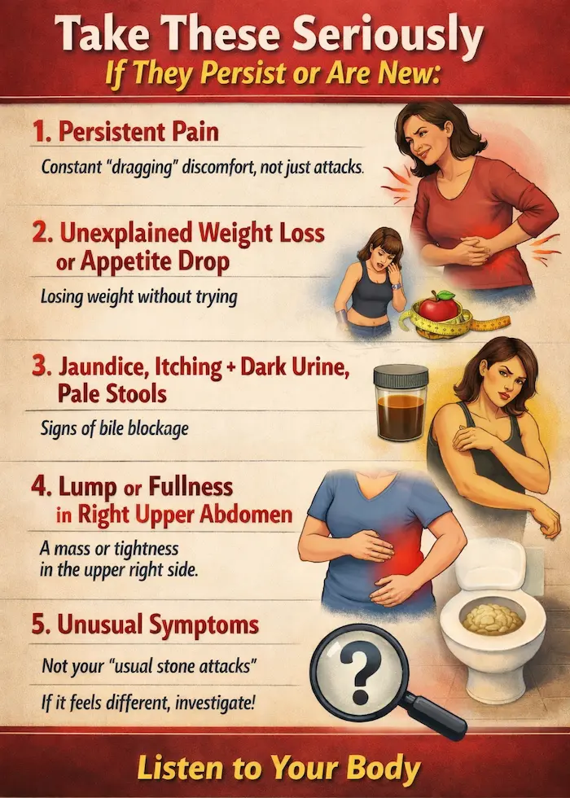
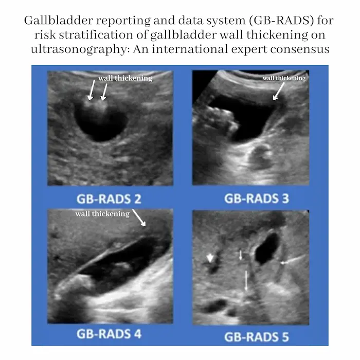
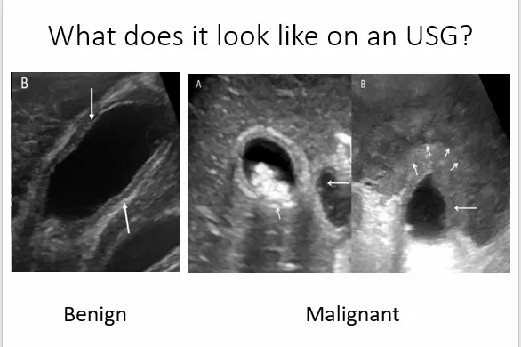
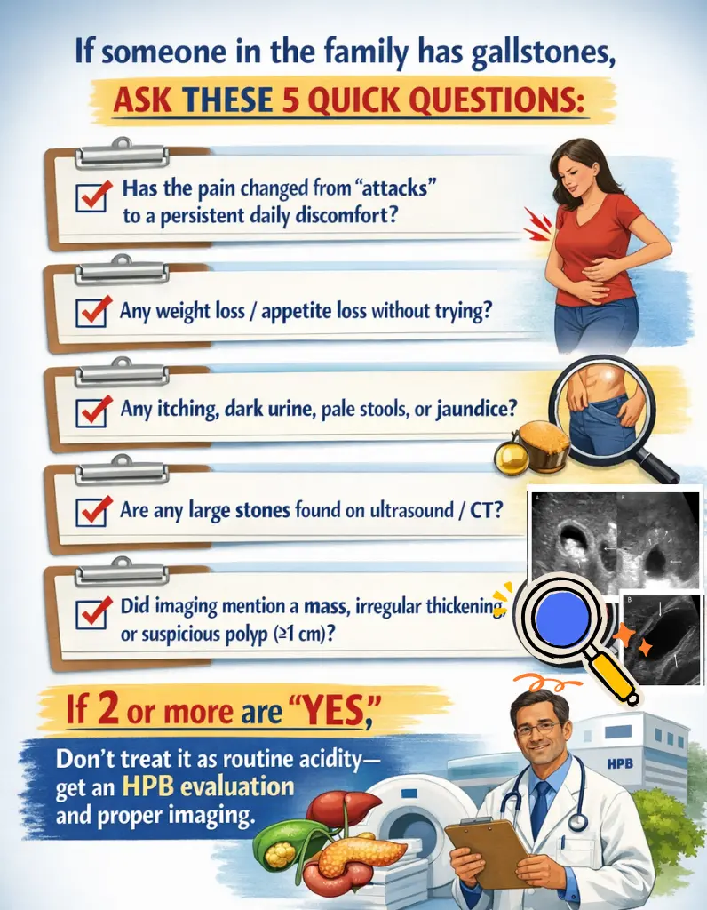

In and around Ranchi , gallbladder stones are so common that many people learn to “live with them.” A pain episode happens, they take antacids, avoid oily food for a few days, and move on.
Symptoms People Miss in the
“Stone Belt”
Across north and east India, higher gallbladder cancer burden is strongly clustered in the Indo-Gangetic / Gangetic (and broader Ganga–Brahmaputra) belt, and gallstones are an associated factor in these regions.
So this blog is a “field guide” for Ranchi patients and families:
When is it “just stones,” and when should you worry about cancer?
First truth: Gallstones are common. Gallbladder cancer is not.
Let’s reduce fear and increase precision.
- Gallstones are the most common risk factor associated with gallbladder cancer, but most people with gallstones never get cancer.
- In Indian data, gallstones are found in a large proportion of gallbladder cancer patients (often cited around 60–90%), but only a small fraction of all gallstone patients develop cancer—one review notes roughly 1–3%.
- Incidental gallbladder cancer (found unexpectedly after gallbladder removal for stones) has been reported in about 0.19%–1.6% of cholecystectomy specimens (mean ~0.36%).
- Across studies, gallstone disease has been associated with higher gallbladder-cancer risk (reported ~2–24×), and gallstones are present in a high proportion of gallbladder cancer cases (e.g., ~86% in one cited dataset).
Meaning: You don’t panic. You watch for high-risk patterns.
The danger link: Large, long-standing stones → chronic irritation
“Chronic inflammation” is the bridge
Long-term friction and inflammation of the gallbladder lining is a key pathway discussed in clinical literature for how stones can contribute to cancer risk over time.
The big stone red flag (≥ 3 cm)
This is one of the most practical, evidence-backed risk signals:
- A classic study found a strong association between stone size and gallbladder cancer; where larger stones (often considered to be more than ≥ 2 cm) were associated with a much higher relative risk than small stones.
- India’s ICMR consensus document summarises that larger stones are associated with increased risk (RR roughly ~9–10 in cited evidence) and that long duration (e.g., >20 years) also increases risk.
In simple words: If someone has a very large stone or stones for many years, it should not be treated casually—especially if symptoms are changing.
“Stones” vs “Cancer”: the symptom pattern that separates them
Many early cancer symptoms mimic gallstone disease. What matters is the pattern.
Typical gallstone pain
- Sudden pain in upper right abdomen (often after oily food)
- Comes in waves, improves with time/meds
- May recur as “attacks”

Cancer-leaning clues (often ignored in Ranchi)
Gallbladder cancer can be vague at first, but common warning symptoms include persistent right-upper abdominal pain, bloating, loss of appetite/weight loss, a palpable mass, and sometimes jaundice (often later).
Take these seriously if they persist or are new:
- Pain that becomes persistent (a constant “dragging” discomfort, not just attacks)
- Unexplained weight loss or appetite drop
- Itching + dark urine + pale stools, especially with jaundice (suggests bile blockage)
- A lump/fullness in the right upper abdomen
- Symptoms that don’t fit your “usual stone attacks” (you know your body—if it’s different, investigate)

The clinic checklist that raises suspicion

When to suspect Gall Bladder Carcinoma in a patient with Gallstone Disease?”
Clinical background that increases suspicion
- Age > 65 years
- Female sex (seen in many series)
- High-incidence regions/ethnic risk background (e.g., Asian populations)
Symptom red flags (especially if they don’t match “typical” stone attacks)
- Jaundice without acute cholecystitis (reported OR ~2.2 in one cited study)
- Weight loss > 10% (unintentional)
- Vague or persistent upper abdominal pain (not just episodic colic)
- Mismatch between symptoms and imaging findings (a “scan–symptom mismatch”)
Blood test clues (LFT pattern)
- Raised total and/or direct bilirubin
- Alkaline phosphatase (ALP) > 120 U/L (reported OR ~1.7 in one cited study)
- Unexplained elevation of liver enzymes / “abnormal LFTs” without a clear cause
Radiology: what to look for on USG/MRI (ask for structured reporting if available)

- Ultrasound (USG): focal/asymmetric wall thickening (often > 5 mm), irregularity, breach of the mucosal line, inhomogeneous echogenicity, or increased vascularity; a discrete mass is strongly suspicious.
- MRI: malignant wall thickening may appear T2-hyperintense with diffusion restriction and show earlier enhancement; mucosal breach or loss of mural layering increases concern.
- GB-RADS (expert consensus) is a structured way to report gallbladder lesions and communicate “how suspicious” the findings are.
Why multiple red flags matter: one cited analysis reported a 47.4-fold increase in risk when 4 risk factors were present together. So the goal is not to fear a single symptom, but to escalate work-up when several red flags cluster.
High-risk “Stone Belt” situations where you shouldn’t delay surgery/workup
Consider a faster HPB (liver–pancreas–bile duct) evaluation when you have gallstones plus any of these:
- Large stone
- Very long history of stones / chronic cholecystitis
- Porcelain gallbladder (calcified gallbladder wall) — risk is debated today but still treated cautiously, especially if symptomatic
- Gallbladder polyp ~≥ 7-8 mm, or those increasing in size (many guidelines recommend cholecystectomy at this size threshold)
- Recurrent symptoms + imaging that shows a mass, irregular gallbladder wall thickening, or suspicious findings

The key surgical point (your message is correct — here’s the precise version)
If cancer is suspected, a simple gallbladder removal is usually not enough.
For suspected/confirmed gallbladder cancer beyond the earliest stage, standard oncologic surgery is typically an extended (radical) cholecystectomy, not just removing the gallbladder.
Radical/extended cholecystectomy generally includes:
- Removing the gallbladder en bloc
- Removing a wedge of liver from the gallbladder bed (often ~2–3 cm margin) or a formal segment IVb/V resection
- Regional lymph node dissection (hepatoduodenal ligament/pericholedochal nodes and related stations) for staging and local control
Why this matters: gallbladder cancer spreads early through lymphatics and into the liver bed; radical surgery aims to remove microscopic spread and reduce recurrence risk.
What’s genuinely new right now
If you want “what’s new” that’s real (not hype), here are three credible shifts:
- Clearer global surgical consensus (2024): International HPB groups have been publishing consensus-style guidance to standardize definitions—what exactly counts as “radical resection,” how much liver, which lymph nodes, and terminology across early/incidental/advanced disease.
- Minimally invasive radical surgery is expanding (but center-dependent): Reviews and meta-analyses (2024–2025) suggest robotic/laparoscopic radical cholecystectomy can be feasible and safe in selected patients when done by experienced teams, while acknowledging most evidence is still retrospective and expertise-dependent.
- More “early detection” research: There’s active work on earlier detection strategies and biomarkers in high-incidence regions, reflecting how urgent this is in India’s belt areas.
Action checklist
If someone in the family has gallstones, ask these 5 quick questions:
- Has the pain changed from “attacks” to a persistent daily discomfort?
- Any weight loss / appetite loss without trying?
- Any itching, dark urine, pale stools, or jaundice?
- Are any large stones found on ultrasound/CT?
- Did imaging mention a mass, irregular thickening, or suspicious polyp (around ≥1 cm)?
If 2 or more are “yes,” don’t treat it as routine acidity—get an HPB evaluation and proper imaging.
Have a question this article does not answer?
Send us your reports. A specialist reviews them before you travel, so the first visit begins with a plan rather than a repeat test.